[7-2] AD单通道与AD多通道 — 学习笔记
- 本集定位：这是模块 7（ADC）的代码课，写两个程序——①
7-1 AD单通道（电位器 → PA0）②7-2 AD多通道（电位器 + 光敏 + 热敏 + 反射红外，4 路 → PA0～PA3）。本集不涉及 DMA、也不涉及中断和模拟看门狗；片尾 48:50「AD 转换的扫描模式和更多高级玩法我们下节再继续」——扫描模式 + DMA 在后续几集。理论（ADC 原理/框图/转换模式）全在 P21 [7-1]，本集只用结论、不重复推导。
一句话结论
本集把 [7-1] 的 ADC 理论落成两个工程。程序一 7-1 AD单通道 由 OLED 工程复制、新建 AD.c/AD.h，接线是电位器三端接 GND / 3.3V / 中间滑动端 → PA0（PA0～PB1 这 10 个引脚才是 ADC 通道）。AD_Init 按六步写：① RCC_APB2PeriphClockCmd 开 ADC1 与 GPIOA 时钟，并用 RCC_ADCCLKConfig(RCC_PCLK2_Div6) 把 ADCCLK 配成 72M/6 = 12MHz（ADC 时钟最大 14MHz）② GPIO 配 GPIO_Mode_AIN 模拟输入（AIN 模式会断开 GPIO，防止数字电路干扰模拟电压，是 ADC 专属模式）③ ADC_RegularChannelConfig(ADC1, ADC_Channel_0, 1, ADC_SampleTime_55Cycles5) 把通道填进规则组序列 1（＝点菜）④ ADC_Init 六成员：ADC_Mode_Independent（独立模式）、ADC_DataAlign_Right（右对齐）、ADC_ExternalTrigConv_None（不用外部触发＝软件触发）、ADC_ContinuousConvMode = DISABLE（单次）、ADC_ScanConvMode = DISABLE（非扫描）、ADC_NbrOfChannel = 1（这个参数只在扫描模式下有用）⑤ ADC_Cmd(ADC1, ENABLE) 上电 ⑥ 校准四步（ADC_ResetCalibration → while 等 ADC_GetResetCalibrationStatus == SET → ADC_StartCalibration → while 等 ADC_GetCalibrationStatus == SET）。读值函数 AD_GetValue：软件触发 ADC_SoftwareStartConvCmd → while 等 ADC_FLAG_EOC 置位 → ADC_GetConversionValue 读 DR——这里有个常见误区：ADC_GetSoftwareStartConvStatus 没用（它只读 SWSTART 位，转换一开始硬件就把它清零了，和「转完没转完」无关），判断结束必须看 EOC；而 EOC 按手册是「规则组或注入组转换结束都会置 1」（老师口述「EOC 只是规则组」有误，手册为准），并且读 DR 后 EOC 会自动清除，不用手动清。现象显示 ADValue:xxxx（0～4095），末尾几位会抖动（正常波动）——判断阈值时要用迟滞比较（双阈值）、怕跳得厉害用均值滤波（读 10/20 个取平均）或裁剪分辨率；换算电压 Voltage = (float)ADValue / 4095 * 3.3（必须先把 ADValue 强转 float），OLED 没有显示浮点数的函数，就用「整数位 + (uint16_t)(Voltage*100)%100 两位小数」拼出来。程序二 7-2 AD多通道 由程序一复制：电位器 → PA0、光敏 AO → PA1、热敏 AO → PA2、反射红外 AO → PA3（用 AO 模拟输出，不是 DO）。关键是不用扫描模式：扫描模式下单个通道转换完成没有任何标志位/中断、要整个序列转完才产生一次 EOC，而一次 AD 转换只要几 us，手动转运根本来不及 → 必须配 DMA（下节）；间断模式要靠 Delay 猜时间、也不推荐。所以本节的多通道写法是「单次非扫描 + 每次转换前改序列 1 的通道」：把 ADC_RegularChannelConfig 移进 AD_GetValue，函数改成 uint16_t AD_GetValue(uint8_t ADC_Channel)，main 里分别调 AD_GetValue(ADC_Channel_0)～(ADC_Channel_3)；GPIO 初始化改成 GPIO_Pin_0 | GPIO_Pin_1 | GPIO_Pin_2 | GPIO_Pin_3。现象 AD0～AD3 四行各自随电位器/遮挡光敏/加热热敏/靠近红外变化。
0. 本集定位：代码课，理论全在 [7-1] P21
- 本集是纯代码课：全程 Keil —— 看接线图 → 面包板接线 → 复制工程 → 新建
AD模块 → 逐行写AD_Init→ 写AD_GetValue→ 编译下载 → OLED 看现象，最后复制改出第二个工程。 - 两个程序，一集写完：①
7-1 AD单通道（0:00–39:20）；②7-2 AD多通道（39:20–49:00）。 - 本集不涉及：DMA（0:00 起多次出现「下节讲 DMA 再用」）、中断（
ADC_ITConfig只读代码不配置）、模拟看门狗（「本节暂时不用」）、扫描模式（明确说留到 DMA 之后）。片尾「扫描模式和更多高级玩法下节继续」。 - 理论引用 P21 即可：ADC 基本结构、规则组/注入组、4 种转换模式、表64 触发源、数据对齐、TCONV 公式，本笔记不再推导，详细推导看
notes/stm32-21-ADC模数转换器.md。 - 编号对照：本集视频标题 [7-2]，两个工程目录叫
7-1/7-2（素材按「代码小节」编号），与前面各集一样两套编号不是一回事。
1. 程序一：7-1 AD单通道
1.1 接线：电位器 → PA0
- 接线图
7-1 AD单通道.jpg：面包板上接一个电位器（滑动变阻器），它有 3 个引脚，插在 3 排孔里； - 电位器内部结构：左边和右边的引脚接电阻的两个固定端，中间的引脚接滑动抽头；电位器外边有个十字槽可以拧，往左拧抽头往左靠、往右拧抽头往右靠；
- 外围电路：左边的固定端接负极（GND）、右边的固定端接正极（3.3V），中间的滑动抽头就输出从负极到正极可调的电压（0～3.3V），接到 PA0；
- 查引脚定义表：PA0 到 PB1 这 10 个引脚是 ADC 的 10 个通道，这 10 个引脚可以任意选，接哪个都行；其他引脚不是 ADC 的通道，就不能接模拟电压。
- 面包板操作：拿出蓝色小电位器，3 个引脚的一侧朝上插在面包板上；最左侧引脚引到负极、最右侧引脚引到正极、中间输出用一根飞线引到 PA0，电路完成。
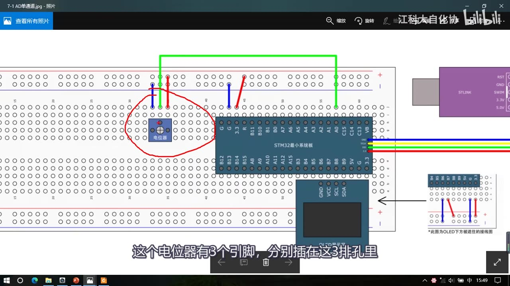
图 1：接线图 7-1 AD单通道——面包板上蓝色电位器（红圈）三个引脚分别接 GND、3.3V，中间滑动端用飞线接到 STM32 的 PA0；右侧是 ST-Link 与 OLED 接线示意；字幕「这个电位器有3个引脚，分别插在这3排孔里」
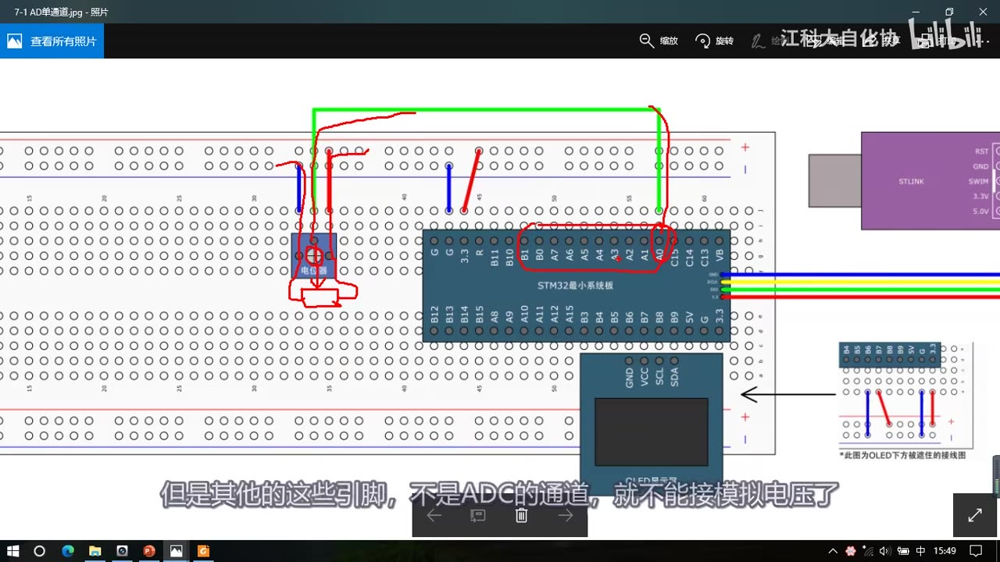
图 2：同一张接线图上，红圈/红线标出 STM32 的 PA0～PB1（板上 B0、B1…A0 一排）这 10 个 ADC 通道引脚；字幕「但是其他的这些引脚，不是ADC的通道，就不能接模拟电压了」
1.2 工程准备：复制 OLED 工程 + 新建 AD 模块
- 打开工程文件夹，复制一下 OLED 的工程，改名
7-1 AD单通道； - 把原来 main 里的代码先删掉，编译一下；
- 老规矩，给 AD 转换建一个模块：
Hardware右键 → 新建AD.c/AD.h（Add New Item 里 Type 选C File/Header File，Name 填AD，Location 是...\Hardware）。
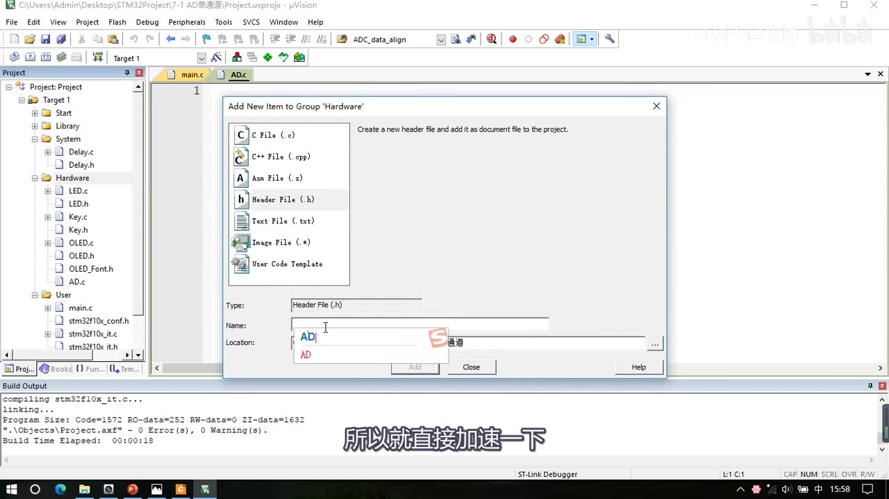
图 3：Keil 的 Add New Item 对话框——Type 选 Header File (.h)、Name 填 AD、Location 为工程的 Hardware 目录；左侧项目树 Hardware 分组下已有 LED.c、Key.c、OLED.c、AD.c；字幕「所以就直接加速一下」
1.3 六步流程：AD_Init 完整代码
先对着「ADC 基本结构」图理清步骤——把结构图打通、原理上让外设运转起来，怎么配置心里就有数了：
| 步 | 做什么 | 本集要点 |
|---|---|---|
| ① | 开启 RCC 时钟（ADC + GPIO），并配置 ADCCLK 分频 | ADC、GPIOA 都在 APB2 |
| ② | 配置 GPIO 为模拟输入 | GPIO_Mode_AIN |
| ③ | 配置多路开关：把通道接入规则组列表 | ADC_RegularChannelConfig（点菜） |
| ④ | 配置 ADC 转换器 | ADC_Init 结构体（模式/对齐/触发/连续/扫描/通道数） |
| ⑤ | 开关控制：给 ADC 上电 | ADC_Cmd |
| ⑥ | 校准 | 四个校准函数 |
- 模拟看门狗和中断本节暂时不用（需要时再配
ADC_ITConfig+ NVIC）。 - 之后软件触发转换有对应函数、读取结果也有对应函数。
完整代码（按画面逐行；六成员顺序与最终代码一致）：
#include "stm32f10x.h"
void AD_Init(void)
{
/* ① 时钟：ADC1 与 GPIOA 都在 APB2；ADCCLK = 72MHz / 6 = 12MHz */
RCC_APB2PeriphClockCmd(RCC_APB2Periph_ADC1, ENABLE);
RCC_APB2PeriphClockCmd(RCC_APB2Periph_GPIOA, ENABLE);
RCC_ADCCLKConfig(RCC_PCLK2_Div6);
/* ② GPIO：模拟输入 */
GPIO_InitTypeDef GPIO_InitStructure;
GPIO_InitStructure.GPIO_Mode = GPIO_Mode_AIN;
GPIO_InitStructure.GPIO_Pin = GPIO_Pin_0;
GPIO_InitStructure.GPIO_Speed = GPIO_Speed_50MHz;
GPIO_Init(GPIOA, &GPIO_InitStructure);
/* ③ 规则组序列 1 填通道 0，采样时间 55.5 个 ADCCLK 周期 */
ADC_RegularChannelConfig(ADC1, ADC_Channel_0, 1, ADC_SampleTime_55Cycles5);
/* ④ ADC 转换器参数 */
ADC_InitTypeDef ADC_InitStructure;
ADC_InitStructure.ADC_Mode = ADC_Mode_Independent;
ADC_InitStructure.ADC_DataAlign = ADC_DataAlign_Right;
ADC_InitStructure.ADC_ExternalTrigConv = ADC_ExternalTrigConv_None;
ADC_InitStructure.ADC_ContinuousConvMode = DISABLE;
ADC_InitStructure.ADC_ScanConvMode = DISABLE;
ADC_InitStructure.ADC_NbrOfChannel = 1;
ADC_Init(ADC1, &ADC_InitStructure);
/* ⑤ 给 ADC 上电 */
ADC_Cmd(ADC1, ENABLE);
/* ⑥ 校准四步 */
ADC_ResetCalibration(ADC1);
while (ADC_GetResetCalibrationStatus(ADC1) == SET);
ADC_StartCalibration(ADC1);
while (ADC_GetCalibrationStatus(ADC1) == SET);
}
① 时钟与 ADCCLK：ADC1 和 GPIOA 都是 APB2 上的设备，所以用 RCC_APB2PeriphClockCmd；ADCCLK 要用 RCC_ADCCLKConfig（在 rcc.h 里，原型 void RCC_ADCCLKConfig(uint32_t RCC_PCLK2)），它对 APB2 的 72MHz 选择 2、4、6、8 分频——本代码选 6 分频，ADCCLK = 72MHz/6 = 12MHz（ADC 时钟最大 14MHz，2 分频 36M、4 分频 18M 都超限）。
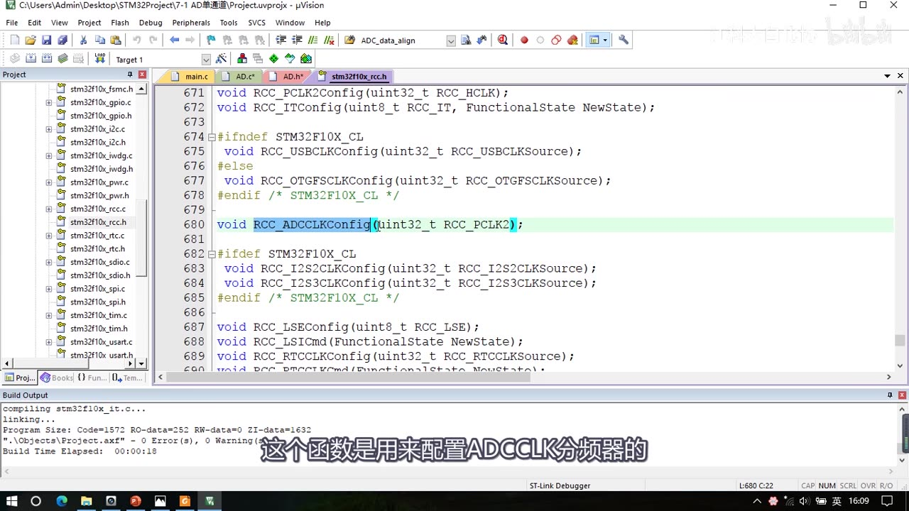
图 4：stm32f10x_rcc.h 里 void RCC_ADCCLKConfig(uint32_t RCC_PCLK2);（第 680 行，高亮）——用于配置 ADCCLK 分频器；字幕「这个函数是用来配置ADCCLK分频器的」
② GPIO 模拟输入：打开 LED.c 复制初始化代码，把模式改成 GPIO_Mode_AIN（模拟输入）、Pin 改成 GPIO_Pin_0——在 AIN 模式下 GPIO 是无效的、断开了 GPIO，防止 GPIO 口的输入输出对模拟电压造成干扰，所以 AIN 就是 ADC 的专属模式。
③ 填规则组菜单：ADC_RegularChannelConfig 的参数依次是 —— ADCx（给 ADC1）、ADC_Channel（通道 0～17）、Rank（规则组序列器里的次序，对应 16 个序列位置）、ADC_SampleTime（该通道的采样时间）。本程序只有 PA0 一个通道、用的是非扫描模式，所以把通道 0 放在序列 1；采样时间「需要更快的转换就选小的参数、需要更稳定就选大的参数，都没要求就给 55.5 个 ADCCLK 周期」。想再填序列 2 就复制一行、把序列号改成 2、通道换成别的（每个通道可以设不同采样时间）。
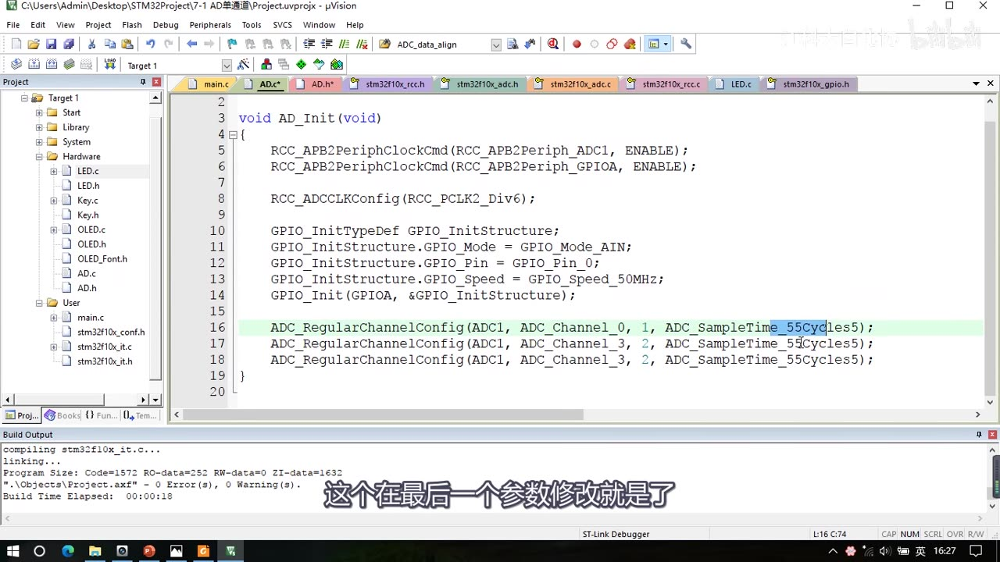
图 5：AD.c 的 AD_Init 前段——RCC_APB2PeriphClockCmd(RCC_APB2Periph_ADC1/GPIOA, ENABLE)、RCC_ADCCLKConfig(RCC_PCLK2_Div6);、GPIO_Mode_AIN、GPIO_Pin_0、GPIO_Speed_50MHz，以及 ADC_RegularChannelConfig(ADC1, ADC_Channel_0, 1, ADC_SampleTime_55Cycles5);（高亮）；下面两行是演示「继续填菜单」的复制行（最终单通道只保留序列 1 一行）；字幕「这个在最后一个参数修改就是了」
④ ADC_Init 六成员：
| 成员 | 本代码取值 | 含义 |
|---|---|---|
ADC_Mode |
ADC_Mode_Independent |
独立模式（ADC1、ADC2 各转各的）；其余 ADC_Mode_* 都是双 ADC 模式，本课不用 |
ADC_DataAlign |
ADC_DataAlign_Right |
右对齐（直接读即结果；左对齐用于取高 8 位等场合） |
ADC_ExternalTrigConv |
ADC_ExternalTrigConv_None |
不使用外部触发 → 即内部软件触发 |
ADC_ContinuousConvMode |
DISABLE |
单次转换（ENABLE 为连续） |
ADC_ScanConvMode |
DISABLE |
非扫描（ENABLE 为扫描，多通道用） |
ADC_NbrOfChannel |
1 |
只在扫描模式下才表示「扫描几个通道」；非扫描时这个参数没有用（无论写多少，只有序列 1 有效） |
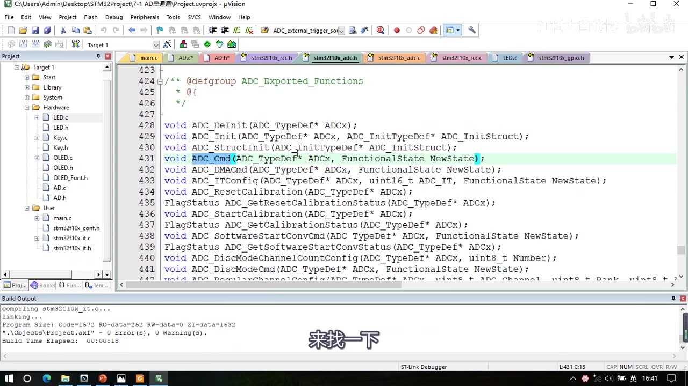
图 6：stm32f10x_adc.h 里 ADC 库函数导出列表——ADC_DeInit、ADC_Init、ADC_StructInit、ADC_Cmd（高亮）、ADC_DMACmd、ADC_ITConfig、ADC_ResetCalibration、ADC_GetResetCalibrationStatus、ADC_StartCalibration、ADC_GetCalibrationStatus、ADC_SoftwareStartConvCmd、ADC_GetSoftwareStartConvStatus、ADC_DiscModeChannelCountConfig、ADC_DiscModeCmd、ADC_RegularChannelConfig 等；字幕「来找一下」
⑤ 上电：ADC_Cmd(ADC1, ENABLE); —— 对应 PPT 里的开关控制。
⑥ 校准四步：
ADC_ResetCalibration(ADC1); /* 第一步：复位校准 */
while (ADC_GetResetCalibrationStatus(ADC1) == SET); /* 第二步：等待复位校准完成 */
ADC_StartCalibration(ADC1); /* 第三步：开始校准 */
while (ADC_GetCalibrationStatus(ADC1) == SET); /* 第四步：等待校准完成 */
- 四个函数分别对应：复位校准、获取复位校准状态、开始校准、获取开始校准状态；初始化完成后依次调用即可，校准过程内部电路自动完成、不用管。
- 对着手册的 ADC_CR2 看：
RSTCAL位「该位由软件设置并由硬件清除，在校准寄存器被初始化后该位将被清除」——所以while (... == SET)的意思是：读到 1 就一直空循环等待，硬件清 0 了才跳出；== SET其实可以省略（SET 本身就是非 0，直接作为条件等价）。CAL位同理。
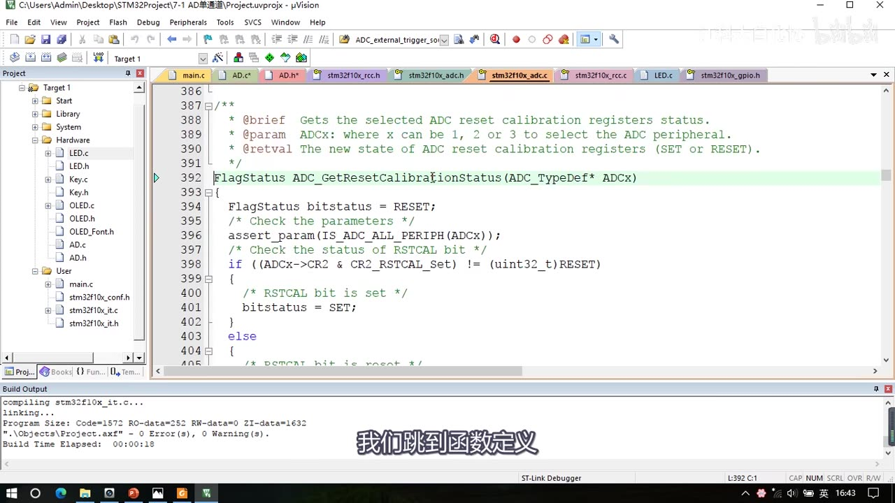
图 7：ADC_GetResetCalibrationStatus 的函数定义（stm32f10x_adc.c）——内部判断 (ADCx->CR2 & CR2_RSTCAL_Set) != RESET，被置位就返回 SET，否则 RESET；字幕「我们跳到函数定义」
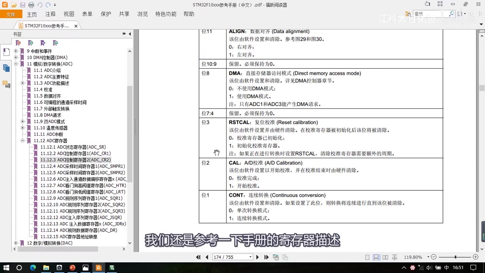
*图 8：参考手册 ADC_CR2 寄存器位说明——位 11 ALIGN（0 右对齐/1 左对齐）、位 8 DMA、位 3 RSTCAL（复位校准，软件设置/硬件清除）、位 2 CAL（A/D 校准）、位 1 CONT（连续转换）；字幕「我们还是参考一下手册的寄存器描述」*
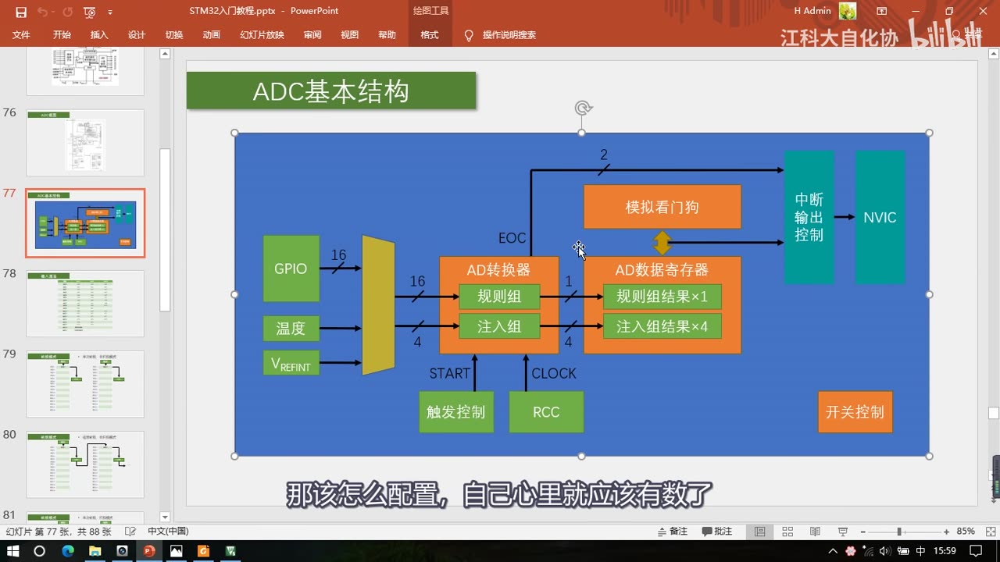
图 9：PPT「ADC基本结构」（7-1 那页（P21））——左边 GPIO(16)/温度/VREFINT → 多路开关 → AD 转换器（规则组/注入组）→ AD 数据寄存器（规则组×1、注入组×4）；触发控制给 START、RCC 给 CLOCK、模拟看门狗→NVIC、EOC、开关控制；字幕「那该怎么配置，自己心里就应该有数了」
1.4 读值函数 AD_GetValue
初始化完成后 ADC 就处于准备就绪状态，调用下面的函数就能「启动 → 等待 → 读取」一气呵成：
uint16_t AD_GetValue(void)
{
ADC_SoftwareStartConvCmd(ADC1, ENABLE); /* 软件触发转换 */
while (ADC_GetFlagStatus(ADC1, ADC_FLAG_EOC) == RESET); /* 等待转换完成（EOC 置 1） */
return ADC_GetConversionValue(ADC1); /* 读数据寄存器 */
}
- 软件触发：
ADC_SoftwareStartConvCmd(ADC1, ENABLE)—— 参数是 ADC1 + ENABLE。 - 等待转换完成：用
ADC_GetFlagStatus(ADC1, ADC_FLAG_EOC)套 while 空循环；可选的标志位有 AWD（模拟看门狗）、EOC（规则组转换完成）、JEOC（注入组转换完成）、JSTRT（注入组开始）、STRT（规则组开始）——我们判断规则组是否完成，所以用 EOC。EOC = RESET 表示转换未完成、while 空循环；转换完成硬件自动置 1，循环自动跳出。 ADC_GetSoftwareStartConvStatus是个坑，没用：它只读 CR2 的 SWSTART 位，而手册明确「该位由软件设置以启动转换，转换开始后硬件马上清除此位」——SWSTART 在转换开始瞬间就清零了，它的返回值跟「转换是否结束」毫无关系，别被名字误导。- EOC 的口径（重要）：手册写的是「该位由硬件在（规则或注入）通道组转换结束时设置」——EOC 不只是规则组，注入组转换结束也会置 1；老师口述「EOC 只是规则组的完成标志位」与手册不符，以手册为准。另外 EOC 可以由软件清除、也可以在读 ADC_DR 时自动清除——因为我们拿到 EOC 就去读 DR，所以不需要再手动清标志位。
- 等待多久：采样 55.5 个周期 + 转换 12.5 个周期 = 68 个 ADCCLK 周期；ADCCLK = 12MHz，所以
1/12M × 68 ≈ 5.6us——这个 while 循环大概会等 5.6us。 - 读结果：
ADC_GetConversionValue(ADC1)内部就是直接读 ADC 的 DR 数据寄存器，返回值就是 AD 转换结果，直接return出去。
1.5 主函数与现象
#include "Delay.h"
#include "OLED.h"
#include "AD.h"
uint16_t ADValue;
int main(void)
{
OLED_Init();
AD_Init();
OLED_ShowString(1, 1, "ADValue:");
while (1)
{
ADValue = AD_GetValue();
OLED_ShowNum(1, 9, ADValue, 4);
}
}
- 把
AD_Init和AD_GetValue的第一行放在头文件里声明，编译没问题；main 里 includeAD.h、先调AD_Init()，定义一个变量uint16_t ADValue存返回值，第 1 行第 1 列显示字符串ADValue:、第 1 行第 9 列显示 4 位数字。 - 现象：OLED 上出现数据，往左拧数据减小、往右拧数据增大，范围 0～4095，功能正常（画面
ADValue:1986）。
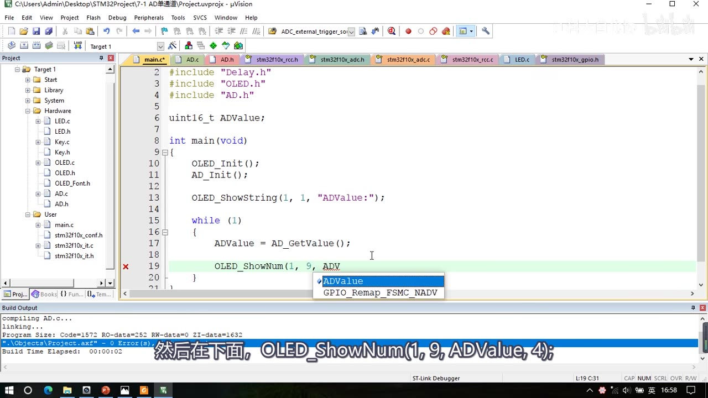
图 10：单通道 main.c——#include "Delay.h"/"OLED.h"/"AD.h"、uint16_t ADValue;、OLED_Init(); AD_Init();、OLED_ShowString(1, 1, "ADValue:");、循环里 ADValue = AD_GetValue(); 与 OLED_ShowNum(1, 9, ADValue, 4);（第 19 行高亮、弹出补全的 ADValue）；字幕「然后在下面，OLED_ShowNum(1, 9, ADValue, 4);」
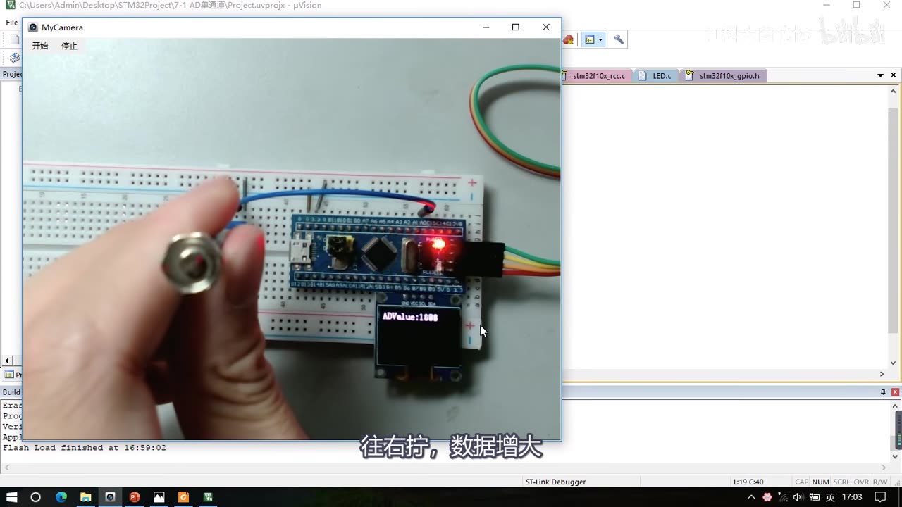
图 11：单通道现象——OLED 显示 ADValue:1986，手正在拧电位器；字幕「往右拧，数据增大」
1.6 AD 值抖动与三种对策
- AD 值的末尾会有些抖动，这是正常的波动；
- 如果你要对 AD 值做判断再执行操作（例如「光线 AD 小于某值就开灯、大于某值就关灯」），光线逐渐变暗时 AD 值会在阈值附近来回跳变，输出就会跟着抖（开灯关灯开灯关灯）——三种对策：
- 迟滞比较：设两个阈值——低于下阈值时开灯、高于上阈值时才关灯，中间留一段不动作的区间，避免输出抖动（和 GPIO 那节讲的施密特触发器是一个原理）；
- 均值滤波：读 10 个或 20 个值取平均值作为滤波后的 AD 值，数据会平滑一些；
- 裁剪分辨率：把数据的尾数去掉，也能减少波动。
1.7 换算并显示实际电压
- 想显示实际电压，只需要对 AD 数据做一个线性变换：
Voltage = ADValue / 4095 * 3.3，把 0～4095 映射到 0～3.3V； - 注意必须先强转 float：
ADValue是整数，直接除 4095 会舍弃小数部分导致计算错误，所以写成Voltage = (float)ADValue / 4095 * 3.3;； - 4095 与 4096 的细节：实际上AD 值等于 4096 时才严格对应 3.3V，所以 4095 对应的电压比 3.3V 小一丢丢（受 ADC 结构限制，达不到满量程）；认为 4095 对应 3.3V、或认为 4096 对应 3.3V 都可以，只有一点点偏差，看不出来差别。
- OLED 显示浮点数的写法：现成的 OLED 驱动还没有显示浮点数的函数（以后讲 OLED 时再安排），可以用显示整数的函数拼：
float Voltage;
OLED_ShowString(2, 1, "Voltage:0.00V");
Voltage = (float)ADValue / 4095 * 3.3;
OLED_ShowNum(2, 9, Voltage, 1); /* 整数部分（小数被舍弃） */
OLED_ShowNum(2, 11, (uint16_t)(Voltage * 100) % 100, 2); /* 两位小数 */
Delay_ms(100); /* 刷新慢一些 */
- 小数部分的原理：先把 Voltage 乘 100（1.23 → 123），再对 100 取余（123 % 100 = 23）就得到小数部分；浮点数不能直接取余，所以
Voltage * 100要先强转成整数（uint16_t）再取余，显示长度为 2。 - 现象：电压值显示出来，拧电位器时 AD 值和电压值一起变化。若只是做值判断、数据记录，也可以不换算、直接用原始 AD 数据。
1.8 顺带演示：连续转换、非扫描模式
- 回看 PPT：本代码用的是第一种（单次转换、非扫描）；还可以用第二种（连续转换、非扫描）——好处是不需要不断触发、也不需要等待转换完成；
- 改法：
ADC_InitStructure.ADC_ContinuousConvMode = ENABLE;；软件触发的函数挪到初始化最后（初始化完成后触发一次即可，之后 ADC 就一次次连续转换、数据寄存器不断刷新最新结果）；AD_GetValue里去掉触发和 EOC 等待，直接return ADC_GetConversionValue(ADC1);； - 现象和单次版一样；演示完改回单次模式（根据实际需求选模式）。
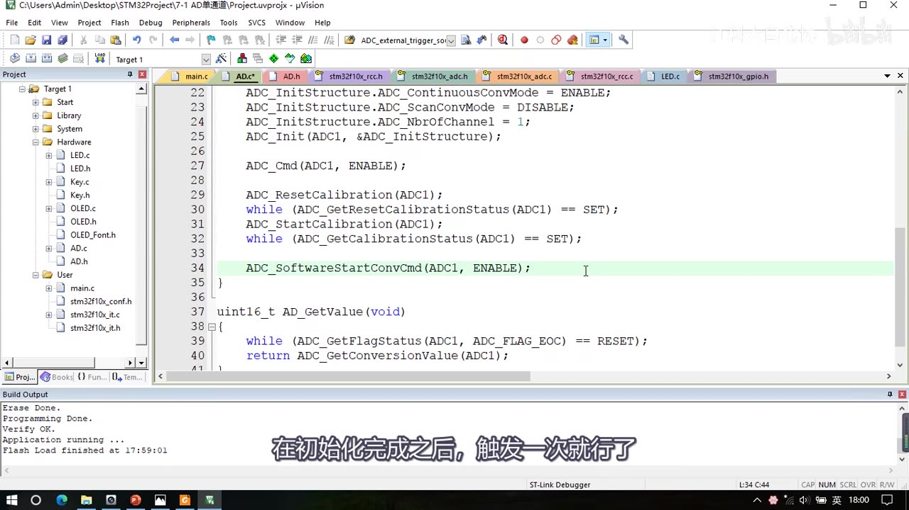
*图 12：连续转换变体——第 22 行 ADC_InitStructure.ADC_ContinuousConvMode = ENABLE;（此帧高亮其实在第 34 行 ADC_SoftwareStartConvCmd）、ADC_ScanConvMode = DISABLE、ADC_NbrOfChannel = 1，下面是 ADC_Cmd + 校准四步 + ADC_SoftwareStartConvCmd(ADC1, ENABLE);（放在初始化末尾），再往下 uint16_t AD_GetValue(void) { while (ADC_GetFlagStatus(ADC1, ADC_FLAG_EOC) == RESET); return ADC_GetConversionValue(ADC1); }（没有触发）；字幕「在初始化完成之后，触发一次就行」*
2. 程序二：7-2 AD多通道
2.1 接线：4 路模拟量 → PA0～PA3
- 接线图
7-2 AD多通道.jpg：使用了 4 个 AD 通道——第一个还是电位器，接在 PA0；上面又接了 3 个传感器模块：光敏传感器、热敏传感器、反射式红外传感器； - 三个模块的 VCC 和 GND 都接面包板的正负极；它们的 AO（模拟量输出引脚）分别接在 PA1、PA2、PA3——注意用 AO，不要接成 DO（DO 是数字输出）；
- 加上电位器的 PA0，总共 4 个输入通道；这些 GPIO 也在 PA0～PB1 之间任意选，本程序选前 4 个。
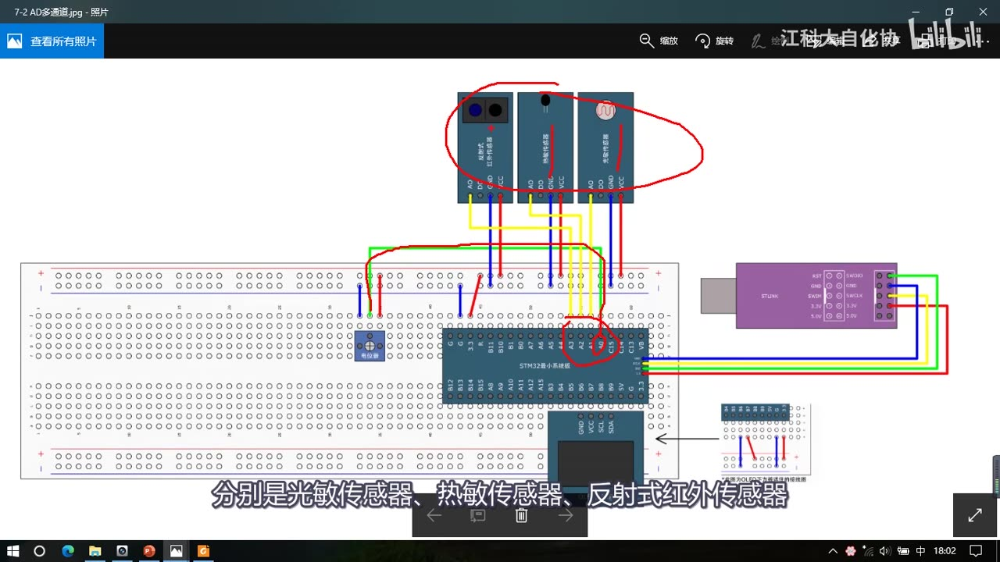
图 13：接线图 7-2 AD多通道——面包板左上角三个传感器模块（反射式红外传感器、光敏传感器、热敏传感器，红圈）的 VCC/GND 接电源、AO 分别接 PA1/PA2/PA3，左侧电位器滑动端接 PA0；字幕「分别是光敏传感器、热敏传感器、反射式红外传感器」
2.2 为什么不用扫描模式
多通道第一反应是用扫描模式（把 4 个通道都填进序列、触发一次转完），这确实是「一种不错的方法」，但必须解决数据覆盖问题，而本节不推荐手动转运，理由有两条：
- 扫描模式下单个通道转换完成没有任何标志位、也不会触发中断——只有整个序列都转换完成之后才会产生一次 EOC；等你能判断「转完了」，前面的数据早就被后面的覆盖丢失了；
- AD 转换非常快：前面算过转换一个通道大概只有几 us——如果你不能在几 us 内把数据转运走，数据就会丢失，对手动转运的要求太高。
- 「那手动转运真的不行吗？」——也不是完全不行，可以用间断模式：扫描时每转换一个通道就暂停一次，等你手动把数据转运走再触发下一次；但单个通道转完没有标志位，所以只能用 Delay 延时来「猜」转换完成，既不能省心也不能提高效率，作者不推荐。
- 本节的解决办法：用单次转换、非扫描模式实现多通道——每次触发转换之前，手动把序列 1 的通道号改掉：第一次写通道 0 → 触发、等待、读值；第二次先改成通道 1 → 触发、等待、读值；第三次改通道 2……依次下去，轻松实现多通道。扫描模式 + DMA 的正规做法留到下一节讲完 DMA 之后再试。
2.3 改代码：把填通道搬进 AD_GetValue 并加参数
改动很小：把原来在 AD_Init 里「填通道」的那一行剪切出来，粘贴到触发转换之前，然后把通道号提取成 AD_GetValue 的参数：
uint16_t AD_GetValue(uint8_t ADC_Channel)
{
ADC_RegularChannelConfig(ADC1, ADC_Channel, 1, ADC_SampleTime_55Cycles5); /* 转换前指定通道 */
ADC_SoftwareStartConvCmd(ADC1, ENABLE);
while (ADC_GetFlagStatus(ADC1, ADC_FLAG_EOC) == RESET);
return ADC_GetConversionValue(ADC1);
}
- 参数类型
uint8_t就是ADC_Channel_x宏的类型（ADC_RegularChannelConfig的第二个参数），原封不动往上传递即可； - 这样调用
AD_GetValue时只要指定一个通道，返回值就是该通道的结果； - GPIO 初始化也要改：因为要用通道 0～3，
GPIO_Pin改成GPIO_Pin_0 | GPIO_Pin_1 | GPIO_Pin_2 | GPIO_Pin_3（把这 4 个引脚都初始化成模拟输入）； - 头文件里
AD_GetValue的声明也要同步改成带参数。
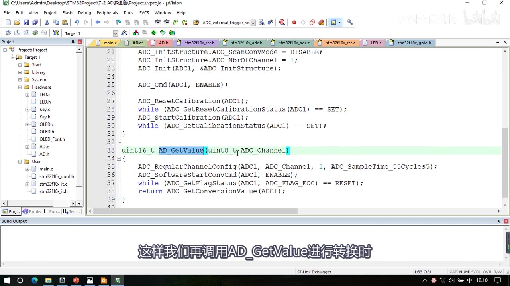
图 14：多通道版 AD.c 核心——uint16_t AD_GetValue(uint8_t ADC_Channel)（高亮），函数体内依次 ADC_RegularChannelConfig(ADC1, ADC_Channel, 1, ADC_SampleTime_55Cycles5);、ADC_SoftwareStartConvCmd(ADC1, ENABLE);、while (ADC_GetFlagStatus(ADC1, ADC_FLAG_EOC) == RESET);、return ADC_GetConversionValue(ADC1);；上方可见 ADC_ScanConvMode = DISABLE、ADC_NbrOfChannel = 1、ADC_Cmd、校准四步；字幕「这样我们再调用AD_GetValue进行转换时」
2.4 多通道主函数与现象
#include "Delay.h"
#include "OLED.h"
#include "AD.h"
uint16_t AD0, AD1, AD2, AD3;
int main(void)
{
OLED_Init();
AD_Init();
OLED_ShowString(1, 1, "AD0:");
OLED_ShowString(2, 1, "AD1:");
OLED_ShowString(3, 1, "AD2:");
OLED_ShowString(4, 1, "AD3:");
while (1)
{
AD0 = AD_GetValue(ADC_Channel_0);
AD1 = AD_GetValue(ADC_Channel_1);
AD2 = AD_GetValue(ADC_Channel_2);
AD3 = AD_GetValue(ADC_Channel_3);
OLED_ShowNum(1, 5, AD0, 4);
OLED_ShowNum(2, 5, AD1, 4);
OLED_ShowNum(3, 5, AD2, 4);
OLED_ShowNum(4, 5, AD3, 4);
Delay_ms(100);
}
}
- 现象：OLED 四行分别显示
AD0～AD3，电位器、光敏（遮挡）、热敏（加热）、反射红外（靠近）各自变化，互不影响（画面AD0:1668 / AD1:1984 / AD2:2809 / AD3:2094）。 - 这就是用「单次转换非扫描」实现 AD 多通道的方法——比较简单直观；扫描模式的正规做法等 DMA 之后再讲。
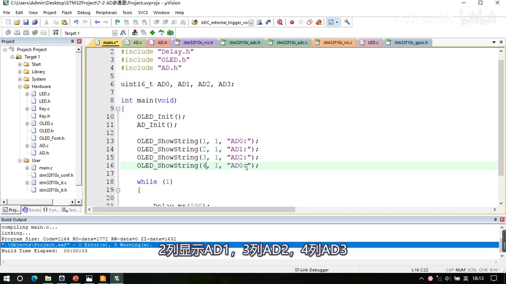
图 15：多通道 main.c——uint16_t AD0, AD1, AD2, AD3;、OLED_Init(); AD_Init();、四行 OLED_ShowString(1..4, 1, "AD0:"～"AD3:")（第 16 行高亮），循环里 4 次 AD_GetValue(ADC_Channel_0～3) + 4 次 OLED_ShowNum + Delay_ms(100);；字幕「2列显示AD1，3列AD2，4列AD3」
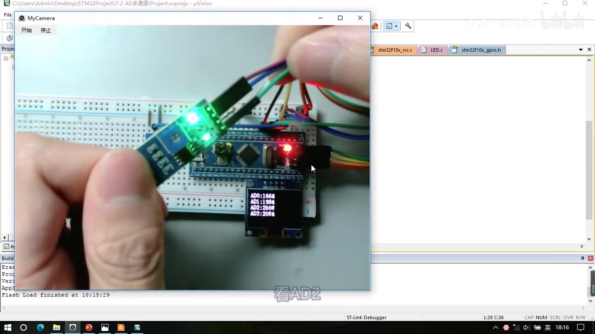
图 16：多通道现象——工程 7-2 AD多通道，OLED 显示 AD0:1668、AD1:1984、AD2:2809、AD3:2094，手正靠近光敏/热敏模块；字幕「看AD2」
3. 两个程序对比
| 项 | ① 7-1 AD单通道 |
② 7-2 AD多通道 |
|---|---|---|
| 工程来源 | 复制 OLED 工程 | 复制程序一 |
| 引脚 | PA0 | PA0 / PA1 / PA2 / PA3（Pin_0 | Pin_1 | Pin_2 | Pin_3） |
| 传感器 | 电位器 | 电位器 + 光敏 + 热敏 + 反射红外（接 AO） |
| ADCCLK | RCC_PCLK2_Div6 → 12MHz |
同左 |
| 转换模式 | 单次、非扫描（另演示连续非扫描） | 单次、非扫描（不用扫描模式） |
| 填通道位置 | AD_Init 里（序列 1） |
移到 AD_GetValue 内，转换前指定 |
| 读值函数 | uint16_t AD_GetValue(void) |
uint16_t AD_GetValue(uint8_t ADC_Channel) |
| 现象 | ADValue:xxxx（0～4095） |
AD0～AD3 四行 |
| DMA/扫描 | 不用 | 不用（留到 DMA 之后） |
坑与易错点
- 只有 PA0～PB1 这 10 个引脚是 ADC 通道：其他引脚接模拟电压读不出正确值（还可能损伤引脚）。
- GPIO 必须配
GPIO_Mode_AIN模拟输入：AIN 会断开 GPIO 的数字部分、防止干扰；配成上拉/下拉/浮空都不对。 - ADCCLK 不能超 14MHz：
RCC_ADCCLKConfig只有 2/4/6/8 分频，72MHz 下只能用 6 分频（12MHz）或 8 分频（9MHz）。 ADC_NbrOfChannel在非扫描模式无效：非扫描只有序列 1 有效，写多少都一样；扫描模式下它才表示「扫几个通道」。ADC_ExternalTrigConv_None= 软件触发：不是「没有触发」，而是「不用外部触发」，由ADC_SoftwareStartConvCmd手动启动。ADC_GetSoftwareStartConvStatus不能判断转换结束：它只读 SWSTART，而 SWSTART 在转换一开始就被硬件清零——判断结束要用ADC_FLAG_EOC。- EOC 不只是规则组（手册）：规则组或注入组转换结束都会置 EOC；读 DR 会自动清除 EOC，不用再手动清标志位。
- 校准不要漏：
ADC_Cmd上电后按手册执行校准四步（复位校准→等完成→开始校准→等完成），可以减小内部电容带来的误差。 while (status == SET)的语义：标志位 为 1 表示「校准进行中」、硬件完成自动清 0，所以条件写== SET（省略== SET也等价）。- 单次转换必须每次触发：
AD_GetValue里要有ADC_SoftwareStartConvCmd；连续模式才把触发挪到初始化末尾、读值函数里去掉触发和等待。 - 电压换算要先强转 float：
(float)ADValue / 4095 * 3.3，否则整数除法会丢掉小数；4095 与 4096 对应 3.3V 都可接受（差一点点）。 - 显示小数要拆开：OLED 没有显示浮点数的函数，用「
ShowNum(整数位)+ShowNum((uint16_t)(V*100)%100, 2)」拼。 - AD 值抖动是正常的：判断阈值要用迟滞比较（双阈值），或均值滤波（10/20 次平均）、裁剪分辨率。
- 扫描模式不能靠手动转运：单通道转换完成没有标志位、没有中断，只有整个序列完成才有 EOC，而且转换只要几 us——必须配 DMA（下节）。
- 多通道用「每次改序列 1」实现：
ADC_RegularChannelConfig要放进AD_GetValue里、在触发之前调用，参数用形参传递，别写死通道 0。 - 改多通道时别忘了 GPIO：
GPIO_Pin要| Pin_1 | Pin_2 | Pin_3，否则 PA1～PA3 不是模拟输入，读数无效。 - 传感器模块接 AO 不是 DO：DO 是数字输出（只有高低电平），ADC 要读模拟量必须接 AO。
- 本集没有 DMA / 中断 / 扫描模式代码：这些都在后续集；本集
ADC_DMACmd、ADC_ITConfig、看门狗函数只是读了一遍库函数列表，没有配置。